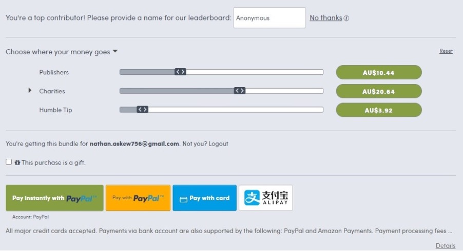

Choice Charities
An honest charity choser
Overview
Our project is to develop a website that will enable users to find a wide variety of charity works, conservation efforts, community projects or other crowd funded projects across Australia. These charities and projects will be displayed on our site after they have been identified as an honest and impactful charity through an analysis conducted by our team. By doing this, people can open our site, browse across a country map, view a wide variety of charity works, knowing that all these charities are going to put their donations to good use and be used for the purpose that they have detailed.
Motivation :
This application will be useful as there are many people that help in a charitable way but want to know that their money is going to the right place and will help those that really need the assistance. There is also currently a huge amount of distrust with charities across Australia. This is partially due to several large charities taking in millions of dollars of donations for the 2019/2020 summer bushfires relief and large portions of these donations were not being sent to though that needed immediate help. In fact, the Australian Red-cross director Noel Clements admitted that of the $115million donated by Australians and internationally at least $11million would be used for ‘administration costs’, and in May the red cross had only distributed 40% of the money they had received with the Salvation Army having only passed on $19 million of the $41 million raised. This is one of the reasons that this website will help. It will give donors an accurate indication of where their money is really going. Although there are similar websites already established what we aim to provide a more user-friendly approach whereby we can present the information to users in an easy to absorb manner. We think that if people want to donate their hard-earned money it should be easy for them to find and process what they need to make an informed choice.
Description :
Our website will be made relatively simply, this way it will be easy for our users to use and it will also make the development of this app simpler as well. It would function by having a map of Australia that would display several pinpoints, each of these would represent a charity or community project. Users can then select one of these pinpoints to be taken to a page for more information about that selected charity, such as who it is run by, what they do, who are they helping, and what would their donations be used for.
By using this website users will be able to browse a number of charities and projects across the country and pick something that is in their local area or simply something that they are passionate about or have an interest in. Alternatively, if a donator is unsure about what to donate too there could also be a randomize function that can be used to pick a random charity for those that simply want to donate but do not know what they want to donate too. As well as this, there could be a “Our top picks” section with some charities or projects that we find particularly beneficial or in dire need of funding. This could be updated on a regular basis so that a wide range of charities get this extra help that many of them are in dire need of.
Our business would be run as a not-for-profit organization as making money of people's charity donations is a rather poor business model, morally speaking. However, we will still need to generate some revenue to be able to cover our costs and keep our site running and up to date. This revenue could be generated through a few different ways, but I have narrowed it down to two that would most likely have the best results without impeding on donators.
The first would be to run advertisements on our site that can generate cashflow. These advertisements would ideally be from advertisers that have similar values to ourselves, or are utilizing wholesome advertising, as it would be rather distasteful to have certain ads for products or services on our site where we are asking for donations.
The other method of generating funds will be to have an option for donators to give a small percentage of their donations to our site to cover our running costs as a tip. To integrate this tipping system smoothly and without hindering donators, it will most likely be best to implement it as a simple slider on the donation page that allows users to control how much of their donation goes to the charity and then how much would go to our site. However, we will also give the option for the user to give the whole amount to the charity as it may be interpreted as a money-making system if we are forcefully taking away from people's donations. This system would most likely function quite similarly to the online store called Humble Bundle (as shown below).
By using both methods combined the site should be able to cover itself financially but whether it would make any more than this would be uncertain. If it did generate more income than was needed to cover the running costs, then this money would be used to put back into the site. This could be done through updating the site, expanding to a wider range of platforms, advertising our site more widely to get more donators or by simply putting any excess funding we receive into one of our many charities, perhaps the one that has received the least donations that year.
Skills :
Skills required for Developing choice charities website
Technical skills required in Developing a fully functional Website that will allow for an end user to easily browse a country map, and locate a specific charity, and read all the information about it, including how the end users money is divided will need a team of members with a wide range of skills and depth and knowledge in the IT Sector. Our Team will need both IT Specific Skills and General Skill sets, which have been identified as: Groups Required Skill set: Implementing IT hardware/Software, Providing IT support, Deep Learning Neural Network anomaly detection and clustering skills, Computing Skills (General OS use), User Experience (UX) Design, SQL/Database, HTML, CSS, JavaScript, PHP, Python, C++.
Our Team will eventually need members with the following job titles:
Entrepreneur/ Chief Executive Officer:
Having a strong team leader to run business operations and has extensive knowledge in the charity and IT field will be extremely beneficial and a face for our charity website.
Technical Project Manager:
A Technical Project Manager is the company's lead subject matter expert on technology issues. In addition, in a company's technology department, they can recruit and train additional support personnel. To optimize all facets of project planning and resource management, they use their business experience. (Technical Project Manager Job Description, 2020) A useful asset in any technology-based company, as will be needed to head projects.
Research Analysts:
A research analyst is responsible for studying, evaluating, interpreting and presenting data pertaining to markets, operations, finance / accounting, economics, consumers and other knowledge pertaining to the field in which they operate. (Research Analyst - Skills, Job Requirements & What Analysts Do, 2020) This will be useful as we will advertise or display many charities and where exactly the end user’s money goes, this will take quite a lot of industry research.
A Full Stack Developer/Senior Web Designer:
A full stack web developer is an individual capable of developing both client and server applications. He / she also knows how to program a browser (like using JavaScript, jQuery, Angular, or Vue) ... in addition to learning HTML and CSS. Database programming (like using SQL, SQLite, or MongoDB) (What is Full Stack, 2020)
This is the crux of how our business works, through a website which will need to be operated and maintained via senior web designer whom can understand both the front end of web development as well as the backend to make sure our day to day operations are always online and available for use.
Front End Web Developer/Lead Web designers:
We will need extra team members with comprehensive Front-end web design knowledge, to maintain the front end of our website, including payment systems through to making sure our servers are protected safe and always online.
Outcome :
In Australia, there are over 56,000 registered charities. These range from education, health, religion, human rights, animal welfare, the environment and social welfare. There are many philanthropic people in Australia who want to donate to a specific charity but are either uneducated to which charity is best for them. Or they are so overwhelmed by the number of charities in Australia, that they don’t know where to start. There are some people that chose to donation to charity as it is a deductable expense on their income tax statement.
Choice Charities would act as a middleman for these people wanting to pick a charity but do not know where to start. Choice charities will link the multitudes of charities in Australia to those who want to donate.
The best part of the app is that it will provide the donator will all the information they need to pick the most suitable charity for them. The app will show the user all the relevant information about a selected charity. It will show them exactly where their money is going and how the charity uses that money. For example; how much money actually goes to those in need and how much money goes into the charity for things like advertising. This will give the donor piece of mind. Also, if this app is successful, it will increase the amount of money that goes to needing charities. This is because people of the public will be able to make a better and more personal decision about where their money is going. They will also be more aware of charities that suit them and that need money.
Choice Charities will have a positive outcome on Australia. Linking and educating people about the charities that matter to them.